ERICKEL CAR SEAT PRODUCTS
Home Page
Contacts
Our Products
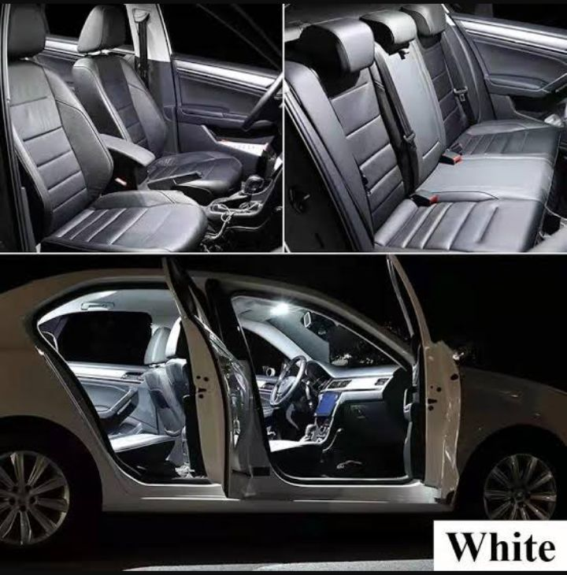
About Us
Erickel Pty LTD is a top-notch car seat covers manufacturing business, which was established in 2010. The business was founded by a car
enthusiast who understood the problems associated with car seats. He noticed that many car owners struggle to find seat covers that not only
are pleasing to the eye but also offer durable protection against challenges associated with upholstery damage.
Our product gives new definition to luxury, comfortability,d urability and protection as we source our material from top factories and we
constantly bet on our workmanship, due to this our car seat covers have proven their inability to fail our clients. Over the years, we
have grown to become the preferred in our industry and we take pride in our ability to customize our seat covers to meet the specific
needs of every customer at competitive prices.
Mission statement
Erickel pty LTD aims to respond to each customer's requirement of high-quality car seat covers that enhance the comfort, style, and protection
of their seats beyond expectation.
Vision
The vision of becoming a lucrative large enterprise has always been the core of our business model. Our plan is to aggressively bring
innovation to our products by constantly exploring new materials, designs and features to enhance the car seat covers' functionality,
safety and convenience as this is vital for staying ahead of the competition. Apart from providing further value addition to our
existing customers, we plan to empower our ability to reach even far markets globally by partnering with reliable partners across
the world to ensure our services are served in a high quality standard all over the markets.
Product/ Service
Erickel pty LTD offers a range of car seat covers that are designed to fit different types of vehicles. With various premium-grade
materials to choose from our products include:
- Both custom and universal fit car seat covers that are tailored to fit specific models and makes of all vehicles
(Small cars, Trucks, SUV's, Buses and etc).
- Seat covers that protect your cars upholstery from scratches, stains, wear and tear.
- Waterproof seat covers which is the perfect solution against liquid spills.
- Refurbishing and renewal of old car seats upholstery. We also offer installation services for our car seat covers.
Our team of experienced technicians can install the covers for you to ensure a perfect fit and a professional finish.
Objectives
- To build a strong brand that is recognized for its luxury quality, reliability and customer service.
- To expand the customer base by reaching out to new customers and also retaining existing ones.
- Meet customers preferences & expectations.
- Aggressively maximize profitability without compromising the quality of our products.
- Bring an innovative aspect to the business.
Target Market
We don't have a categorized target market as we cater for all sorts of vehicles. Our customers range from individuals who are looking
to upgrade their car's interior to business owners that need to protect their fleet vehicles (mostly buses and trucks) from upholstery
damage.
Core values
- Supreme quality
- Satisfactory Customer Service
- Honesty and Integrity
- Sustainability
- Innovation
What makes us different
Our competitive advantage lies in our commitment for being a customer-focused company with continuous improvement to meet customers
satisfaction through our premium product.
Testimonials
"They are the last stop for quality merged with style where car seat covers are concerned " - Gert Kriel
"The only recommended place for premium seat protection covers. They've been our (Pre-owned cars dealership)car
seat covers supplier for 3 years and we are still happy clients" - Paul Dutton
"They are simply the best in their field and the staff constantly displays unmatched customer service" -Annaphiri Mphahlele
Our Products/Work
Company Profile
Our Photo Library
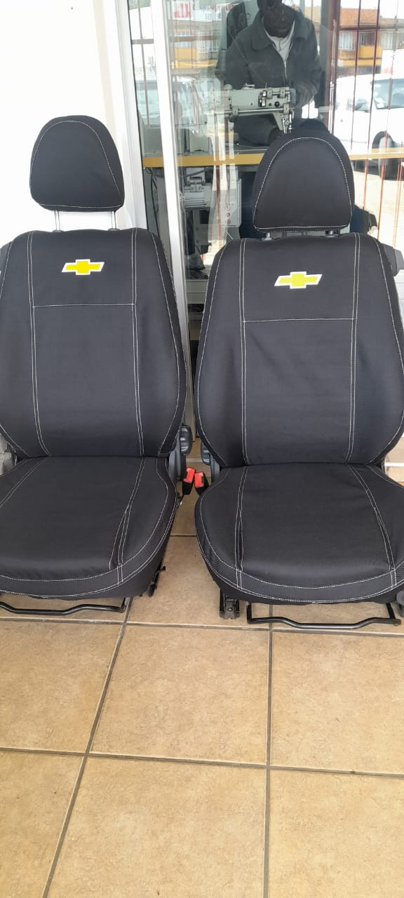
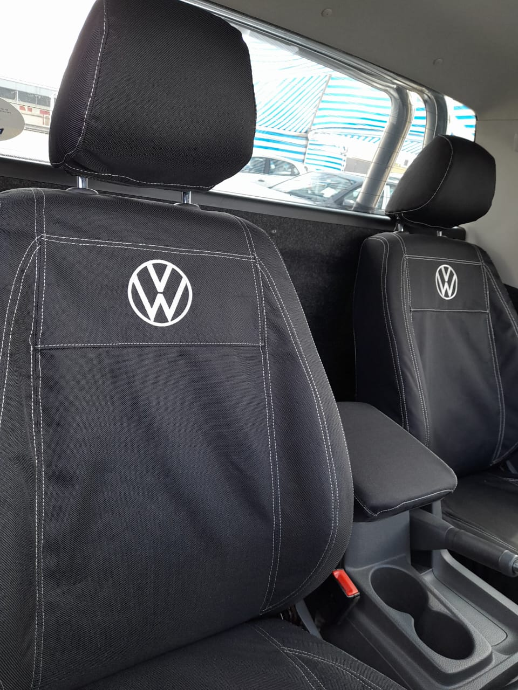
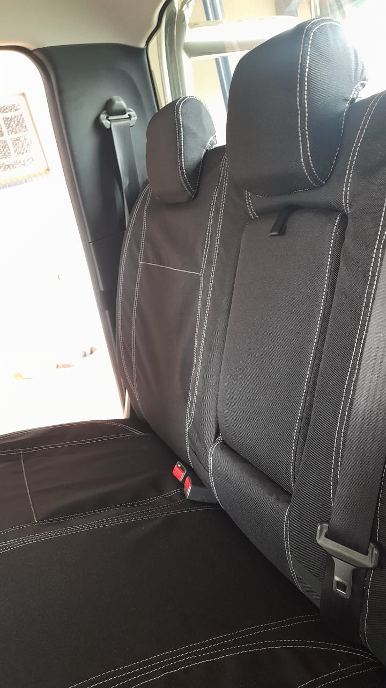
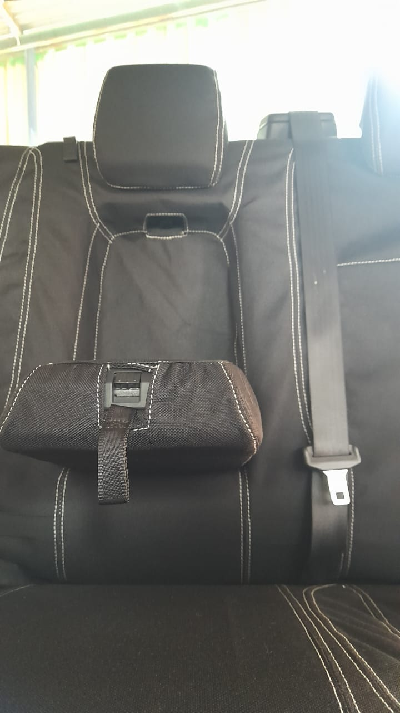
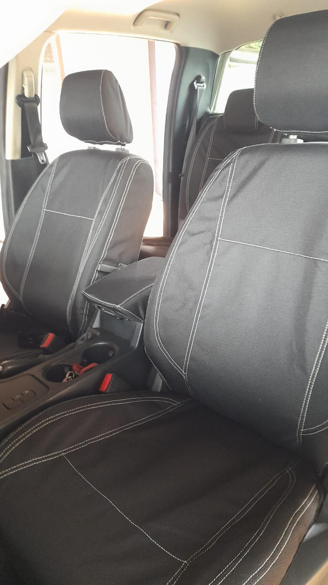
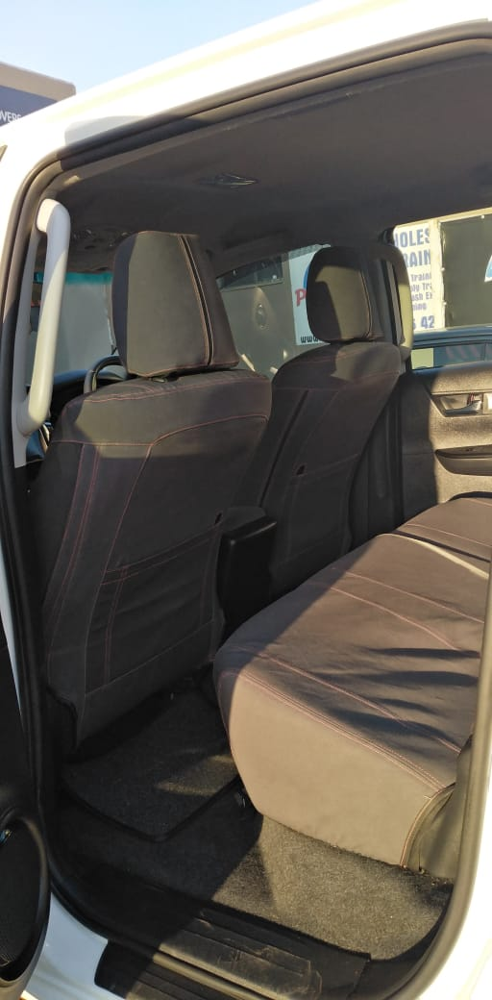
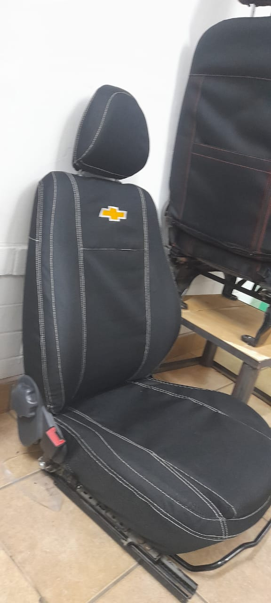
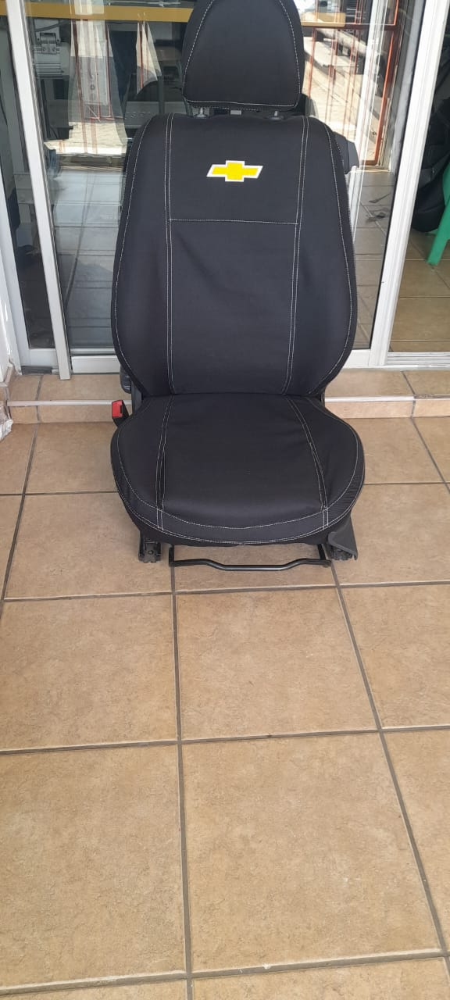
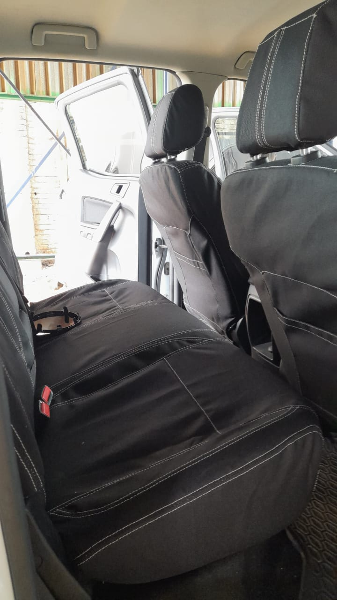
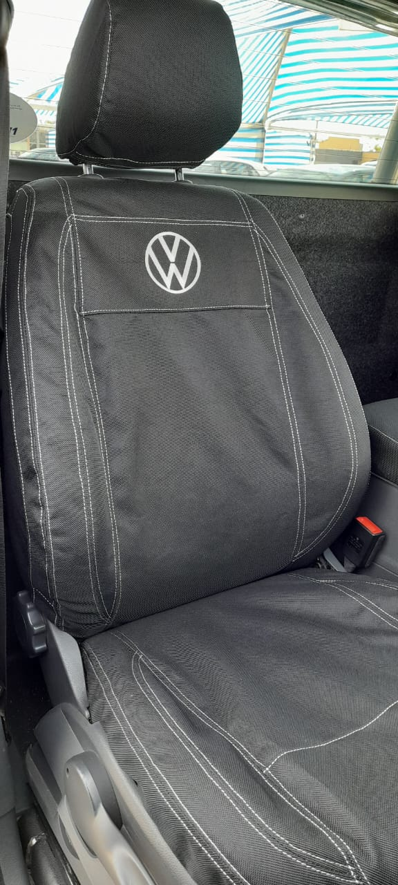